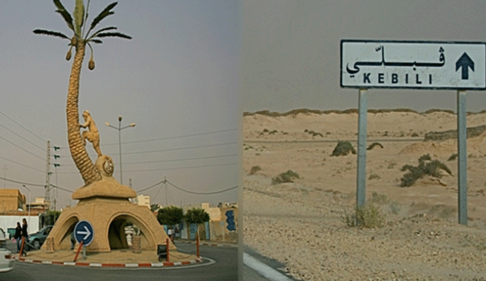
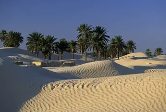
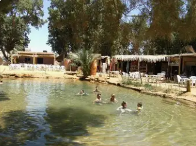
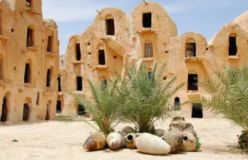
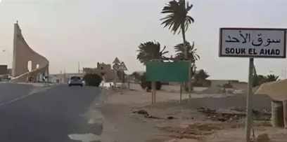

Porte du Grand Sahara

Kébili est un gouvernorat situé dans l'extrême sud de la Tunisie, au cœur du Grand Sahara. C'est la région la plus chaude de Tunisie et l'une des plus chaudes d'Afrique, avec des températures record dépassant régulièrement 50°C en été.
La ville de Kébili, chef-lieu du gouvernorat, est une ancienne oasis stratégique sur la route des caravanes transsahariennes. Elle est entourée de dunes de sable doré, de chotts salés et de palmeraies luxuriantes.
Le gouvernorat se distingue par le majestueux Grand Erg Oriental (mer de dunes), le lac salé de Chott el-Fejaj, l'oasis historique de Douz (porte du Sahara), ses festivals sahariens authentiques, et sa culture nomade préservée.
Immense mer de dunes de sable doré s'étendant à l'infini. Dunes géantes ondulantes, paysages sahariens spectaculaires. Randonnées chamelières, bivouacs sous les étoiles, désert authentique.
Oasis légendaire point de départ vers le désert. Festival International du Sahara en décembre. Courses de dromadaires, traditions nomades, marché aux dromadaires. Capitale du tourisme saharien.
L'une des régions les plus chaudes d'Afrique avec records dépassant 55°C. Climat saharien extrême, soleil écrasant. Adaptation remarquable de la vie humaine aux conditions extrêmes.
Traditions bédouines ancestrales vivantes. Tentes en poil de chameau, artisanat nomade, poésie bédouine, hospitalité légendaire. Mode de vie saharien authentique et préservé.

Oasis mythique au bord du Grand Erg Oriental, dernière ville avant l'immensité du désert. Palmeraie verdoyante, marché traditionnel animé, point de départ des caravanes. Festival du Sahara célèbre avec courses de dromadaires, fantasias, mariages traditionnels. Atmosphère saharienne authentique incomparable.

Oasis isolée en plein désert avec source thermale naturelle chaude et palmeraie verdoyante entourée de dunes. Fort romain vestige du limes africain. Campements nomades, nuits sous les étoiles, silence absolu du désert. L'un des endroits les plus magiques et reculés de Tunisie.

Village oasien authentique avec architecture traditionnelle en pisé et palmiers dattiers. Maisons aux couleurs ocre, ruelles ombragées, mode de vie oasien préservé. Proximité avec les dunes du Grand Erg, ambiance paisible et intemporelle. Parfait exemple d'adaptation à la vie saharienne.

Ancien poste caravannier historique sur la route des esclaves et du commerce transsaharien. Vestiges d'architecture coloniale française, vieille gare terminus de ligne ferroviaire disparue. Ville frontière austère aux portes du désert absolu. Mémoire des routes caravanières séculaires.